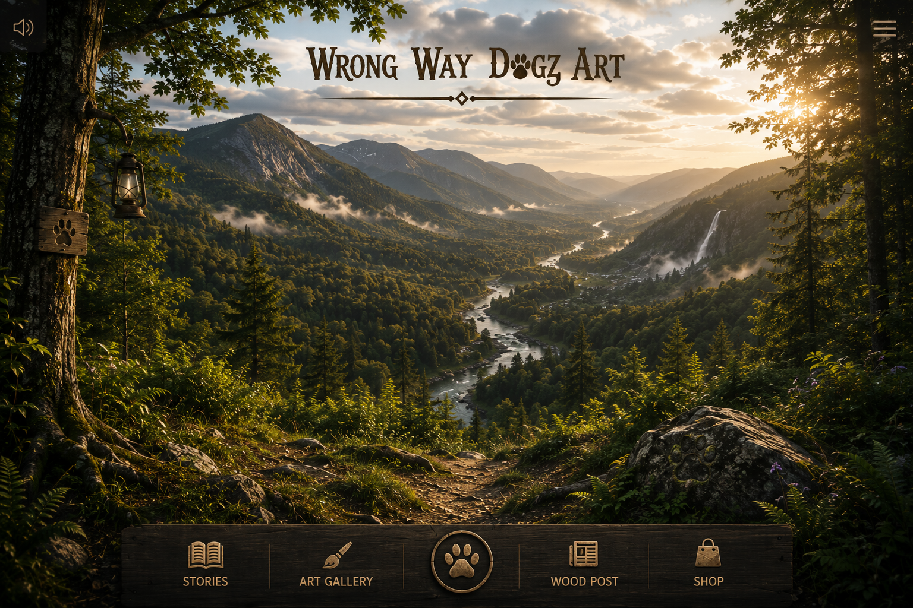

Familiar faces, unfamiliar places.
Patch wanders and collects curiosities. Back Alley Gary has a rather unusual history. There's more to both of them than a picture can tell.
Art, stories, sounds, and an odd little world to wander through. There are a few things on the shelf already. Come have a look.
Read a little story
Patch needs one final herb for his stew. Galen only came over for beanwater. Somehow, an ordinary afternoon becomes an expedition involving a mischievous bird, a very unfortunate pebble, and an extraordinary amount of effort for a little flair.
Open the book · Read freeBooks, odd characters, curious sounds, and places worth looking at twice. Pick whatever catches your eye.
Patch wanders and collects curiosities. Back Alley Gary has a rather unusual history. There's more to both of them than a picture can tell.
Music, strange broadcasts, and curious recordings—including Unusual Findings from the Department of Existence.
Our first Little Echoes story is ready. Open The Last Ingredient and meet Patch and Galen.
Artwork, puzzles, and places to poke around. Step inside a scene or visit The Little Gallery at BGCIB.

In Echo Valley, ordinary afternoons have a habit of becoming something else. Its inhabitants have places to go, unusual interests, and lives of their own.
Sometimes the best way to meet a place is through one small story.
Ever see a picture and wish you could lean into it? Try two woodland views with a little movement and depth. It's a playful illusion, not a full 3D world—just a different way to enjoy the art.
Explore the viewsMore artwork and puzzles live in The Little Gallery at BGCIB.
The Last Ingredient is free to read. Patch needs a very particular herb, Galen only came for beanwater, and a bird has other plans. Read the story.
An independent creative workshop for curious people of all ages. Our approach is simple: notice, wonder, experiment, make, learn, reuse and wander. We believe creativity can lead somewhere interesting even when you don't know exactly where you're going.
Part of BGCIB — Become, Grow, Come Into Being, the wider home for our projects.